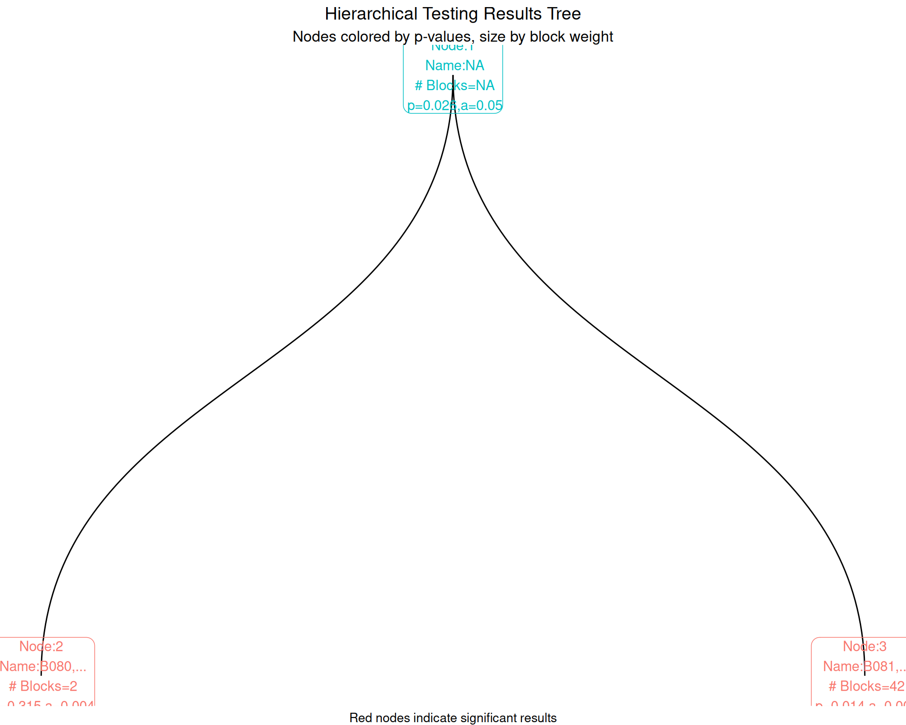
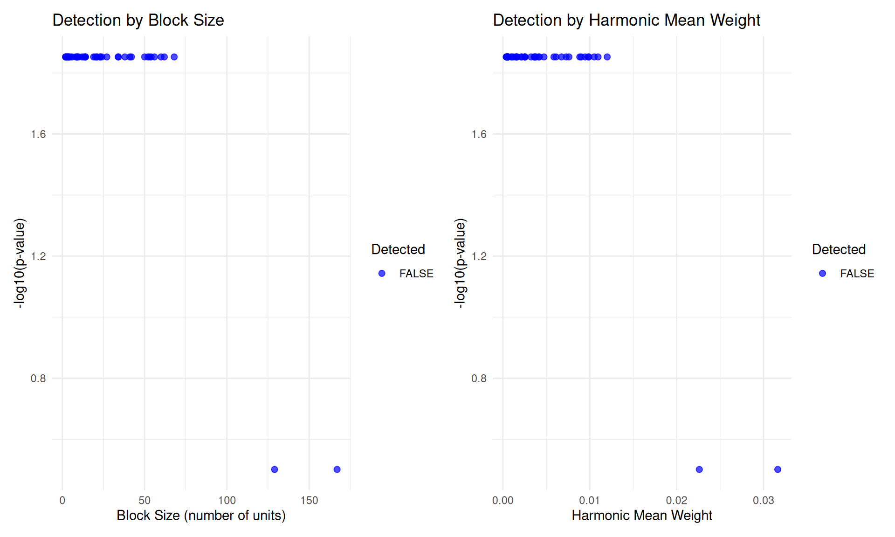

library(manytestsr)
library(data.table)
library(dplyr)
library(ggplot2)
library(ggraph)
# Load example data
data(example_dat, package = "manytestsr")
head(example_dat)
#> id year trt Y1 Y2 trtF place_year_block place blockF
#> <int> <int> <int> <num> <num> <fctr> <char> <char> <fctr>
#> 1: 1 1 0 0 0 0 A.1.B082 A B082
#> 2: 2 3 0 0 12 0 B.3.B094 B B094
#> 3: 3 1 0 0 0 0 C.1.B097 C B097
#> 4: 4 1 0 6 0 0 C.1.B097 C B097
#> 5: 5 1 0 7 11 0 B.1.B089 B B089
#> 6: 6 1 1 0 0 1 A.1.B080 A B080Hierarchical Testing with manytestsr
Introduction
The manytestsr package implements hierarchical testing procedures for detecting treatment effects across multiple experimental blocks while controlling error rates. This approach is particularly useful when you have:
- Multiple experimental units organized in blocks
- Heterogeneous treatment effects across blocks
- Need to identify which specific blocks show effects
- Want to control family-wise error rate (FWER) or false discovery rate (FDR)
This vignette walks through the complete workflow from data preparation to results interpretation.
Loading the Package and Data
The example dataset contains:
-
id: Individual unit identifier -
blockF: Block (cluster) factor -
trtF: Treatment assignment factor (0 = control, 1 = treatment) -
Y1,Y2: Outcome variables -
place: Location identifier -
year: Time identifier -
place_year_block: Hierarchical grouping variable
Data Preparation
The hierarchical testing approach requires both individual-level data (idat) and block-level summaries (bdat):
# Individual-level data is already in the right format
idat <- as.data.table(example_dat)
print(paste("Number of individuals:", nrow(idat)))
#> [1] "Number of individuals: 1268"
print(paste("Number of blocks:", length(unique(idat$blockF))))
#> [1] "Number of blocks: 44"
# Create block-level dataset with key variables
bdat <- idat %>%
group_by(blockF) %>%
summarize(
# Sample size
nb = n(),
# Proportion treated
pb = mean(trt),
# Harmonic mean weight (for testing power)
hwt = (nb / nrow(idat)) * (pb * (1 - pb)),
# Block characteristics
place = unique(place),
year = unique(year),
place_year_block = factor(unique(place_year_block)),
.groups = "drop"
) %>%
as.data.table()
head(bdat)
#> blockF nb pb hwt place year place_year_block
#> <fctr> <int> <num> <num> <char> <int> <fctr>
#> 1: B080 129 0.6666667 0.022607781 A 1 A.1.B080
#> 2: B081 68 0.6617647 0.012003618 A 1 A.1.B081
#> 3: B082 56 0.6607143 0.009900293 A 1 A.1.B082
#> 4: B083 8 0.6250000 0.001478707 A 1 A.1.B083
#> 5: B084 9 0.7777778 0.001226779 A 2 A.2.B084
#> 6: B085 53 0.6226415 0.009820844 A 3 A.3.B085Key block-level variables:
-
hwt(harmonic mean weight): Measures testing power for each block -
nb(block size): Number of units in each block -
pb(proportion treated): Treatment assignment rate -
place_year_block: Hierarchical factor for pre-specified splits
Basic Hierarchical Testing
Using Cluster-Based Splitting
The most common approach uses clustering to split blocks based on a continuous variable:
# Run hierarchical testing with cluster-based splitting
results_cluster <- find_blocks(
idat = idat,
bdat = bdat,
blockid = "blockF",
splitfn = splitCluster, # Split using k-means clustering
pfn = pOneway, # Use t-tests
fmla = Y1 ~ trtF | blockF,
splitby = "hwt", # Split based on harmonic mean weights
parallel = "no", # Disable parallel processing for demo
trace = TRUE, # Show split progression
thealpha = 0.05
)
# Examine the structure
str(results_cluster, max.level = 1)
#> List of 2
#> $ bdat :Classes 'data.table' and 'data.frame': 44 obs. of 17 variables:
#> ..- attr(*, ".internal.selfref")=<externalptr>
#> ..- attr(*, "sorted")= chr "testable"
#> $ node_dat:Classes 'data.table' and 'data.frame': 1 obs. of 10 variables:
#> ..- attr(*, ".internal.selfref")=<externalptr>Results Overview
# Block-level results
cat("Block-level results structure:\n")
#> Block-level results structure:
cat("Number of blocks:", nrow(results_cluster$bdat), "\n")
#> Number of blocks: 44
cat("Variables:", names(results_cluster$bdat), "\n\n")
#> Variables: blockF nb pb hwt place year place_year_block p1 pfinalb group_id node_id g1 alpha1 testable nodenum_current nodenum_prev blocksbygroup
# Node-level results
cat("Node-level results structure:\n")
#> Node-level results structure:
cat("Number of nodes:", nrow(results_cluster$node_dat), "\n")
#> Number of nodes: 1
cat("Depth levels:", sort(unique(results_cluster$node_dat$depth)), "\n")
#> Depth levels: 1Alternative Splitting Strategies
Pre-specified Hierarchical Splitting
When you have natural hierarchical structure, use factor-based splitting:
# Use pre-specified hierarchical splits
results_hierarchical <- find_blocks(
idat = idat,
bdat = bdat,
blockid = "blockF",
splitfn = splitSpecifiedFactor,
pfn = pIndepDist, # Use distance-based test
fmla = Y2 ~ trtF | blockF,
splitby = "place_year_block",
parallel = "no",
trace = TRUE,
thealpha = 0.05
)
print(paste(
"Hierarchical approach found",
nrow(results_hierarchical$node_dat), "nodes"
))
#> [1] "Hierarchical approach found 5 nodes"Leave-One-Out Splitting
Focus testing on largest blocks first:
# Leave-one-out approach
results_loo <- find_blocks(
idat = idat,
bdat = bdat,
blockid = "blockF",
splitfn = splitLOO,
pfn = pOneway,
fmla = Y1 ~ trtF | blockF,
splitby = "hwt", # Focus on blocks with highest power
parallel = "no",
thealpha = 0.05
)
print(paste(
"LOO approach found",
nrow(results_loo$node_dat), "nodes"
))
#> [1] "LOO approach found 1 nodes"Sequential Error Rate Control
Alpha Investing (FDR Control)
For more powerful testing with FDR control:
# Use alpha investing for sequential FDR control
results_fdr <- find_blocks(
idat = idat,
bdat = bdat,
blockid = "blockF",
splitfn = splitCluster,
pfn = pIndepDist,
alphafn = alpha_investing, # Sequential FDR control
fmla = Y1 ~ trtF | blockF,
splitby = "hwt",
parallel = "no",
thealpha = 0.05,
thew0 = 0.049 # Starting wealth
)
# Compare alpha levels across approaches
alpha_comparison <- data.frame(
Node = 1:min(nrow(results_cluster$node_dat), nrow(results_fdr$node_dat)),
Fixed_Alpha = results_cluster$node_dat$a[1:min(
nrow(results_cluster$node_dat),
nrow(results_fdr$node_dat)
)],
Adaptive_Alpha = results_fdr$node_dat$a[1:min(
nrow(results_cluster$node_dat),
nrow(results_fdr$node_dat)
)]
)
print("Alpha level comparison:")
#> [1] "Alpha level comparison:"
head(alpha_comparison)
#> Node Fixed_Alpha Adaptive_Alpha
#> 1 1 0.05 0.05Detecting Significant Effects
Using FWER Control
# Detect significant blocks using FWER control
detections_fwer <- report_detections(
results_cluster$bdat,
fwer = TRUE,
alpha = 0.05,
blockid = "blockF"
)
# Summary of detections
cat("FWER Results:\n")
#> FWER Results:
cat("Total blocks:", nrow(detections_fwer), "\n")
#> Total blocks: 44
cat("Significant blocks:", sum(detections_fwer$hit, na.rm = TRUE), "\n")
#> Significant blocks: 0
cat(
"Detection rate:",
round(mean(detections_fwer$hit, na.rm = TRUE) * 100, 1), "%\n\n"
)
#> Detection rate: 0 %
# Show significant blocks
if (sum(detections_fwer$hit, na.rm = TRUE) > 0) {
significant_blocks <- detections_fwer[
hit == TRUE,
.(blockF, pfinalb, fin_nodenum)
]
print("Significant blocks:")
print(significant_blocks)
}Using FDR Control
# Detect using FDR control
detections_fdr <- report_detections(
results_fdr$bdat,
fwer = FALSE, # Use FDR instead
alpha = 0.05
)
cat("FDR Results:\n")
#> FDR Results:
cat("Significant blocks:", sum(detections_fdr$hit, na.rm = TRUE), "\n")
#> Significant blocks: 44
cat(
"Detection rate:",
round(mean(detections_fdr$hit, na.rm = TRUE) * 100, 1), "%\n"
)
#> Detection rate: 100 %Visualizing Results
Tree Structure Visualization
# Create tree structure for visualization
tree_results <- make_results_tree(
results_cluster,
block_id = "blockF",
node_label = "hwt"
)
# Create the graph visualization
tree_plot <- make_results_ggraph(tree_results$graph, remove_na_p = TRUE)
# Customize the plot
tree_plot_styled <- tree_plot +
labs(
title = "Hierarchical Testing Results Tree",
subtitle = "Nodes colored by p-values, size by block weight",
caption = "Red nodes indicate significant results"
) +
theme_void() +
theme(
plot.title = element_text(size = 14, hjust = 0.5),
plot.subtitle = element_text(size = 12, hjust = 0.5),
plot.caption = element_text(size = 10, hjust = 0.5)
)
print(tree_plot_styled)
Detection Summary Plot
# Compare detection rates across methods
detection_summary <- data.frame(
Method = c("FWER (Cluster)", "FDR (Alpha Investing)", "FWER (Hierarchical)", "FWER (LOO)"),
Detections = c(
sum(detections_fwer$hit, na.rm = TRUE),
sum(detections_fdr$hit, na.rm = TRUE),
sum(report_detections(results_hierarchical$bdat, fwer = TRUE)$hit, na.rm = TRUE),
sum(report_detections(results_loo$bdat, fwer = TRUE)$hit, na.rm = TRUE)
),
Total_Blocks = c(
nrow(detections_fwer),
nrow(detections_fdr),
nrow(results_hierarchical$bdat),
nrow(results_loo$bdat)
)
)
detection_summary$Detection_Rate <- detection_summary$Detections / detection_summary$Total_Blocks
# Create comparison plot
ggplot(detection_summary, aes(x = Method, y = Detection_Rate, fill = Method)) +
geom_col(alpha = 0.8) +
geom_text(aes(label = paste0(Detections, "/", Total_Blocks)),
vjust = -0.5, size = 3
) +
labs(
title = "Detection Rates Across Testing Methods",
y = "Proportion of Blocks with Detected Effects",
x = "Testing Method"
) +
scale_y_continuous(labels = scales::percent_format()) +
theme_minimal() +
theme(
axis.text.x = element_text(angle = 45, hjust = 1),
legend.position = "none"
)
Interpreting P-values and Alpha Levels
P-value Progression Through Tree
# Examine p-value patterns
pvalue_data <- results_cluster$node_dat[, .(
nodenum,
depth,
p,
a,
testable,
nodesize
)]
# Show how p-values change with depth
pvalue_summary <- pvalue_data[!is.na(p), .(
Mean_P = mean(p),
Median_P = median(p),
Mean_Alpha = mean(a),
N_Nodes = .N
), by = depth]
print("P-value progression by tree depth:")
#> [1] "P-value progression by tree depth:"
print(pvalue_summary)
#> depth Mean_P Median_P Mean_Alpha N_Nodes
#> <int> <num> <num> <num> <int>
#> 1: 1 0.05971615 0.05971615 0.05 1Statistical Power Analysis
# Analyze relationship between block characteristics and detection
power_data <- merge(
detections_fwer[, .(blockF, hit, pfinalb)],
bdat[, .(blockF, hwt, nb, pb)],
by = "blockF"
)
# Power vs. block size
p1 <- ggplot(power_data, aes(x = nb, y = -log10(pfinalb), color = hit)) +
geom_point(alpha = 0.7, size = 2) +
scale_color_manual(values = c("FALSE" = "blue", "TRUE" = "red")) +
labs(
title = "Detection by Block Size",
x = "Block Size (number of units)",
y = "-log10(p-value)",
color = "Detected"
) +
theme_minimal()
# Power vs. harmonic mean weight
p2 <- ggplot(power_data, aes(x = hwt, y = -log10(pfinalb), color = hit)) +
geom_point(alpha = 0.7, size = 2) +
scale_color_manual(values = c("FALSE" = "blue", "TRUE" = "red")) +
labs(
title = "Detection by Harmonic Mean Weight",
x = "Harmonic Mean Weight",
y = "-log10(p-value)",
color = "Detected"
) +
theme_minimal()
# Combine plots
library(patchwork)
p1 + p2 + plot_layout(ncol = 2)
Advanced Usage: Multiple Outcomes
Testing Multiple Outcomes
# Test both outcomes with local p-value adjustment
results_multi_Y1 <- find_blocks(
idat = idat,
bdat = bdat,
blockid = "blockF",
splitfn = splitCluster,
pfn = pIndepDist,
local_adj_p_fn = local_simes, # Simes adjustment within nodes
fmla = Y1 ~ trtF | blockF,
splitby = "hwt",
parallel = "no",
thealpha = 0.05
)
results_multi_Y2 <- find_blocks(
idat = idat,
bdat = bdat,
blockid = "blockF",
splitfn = splitCluster,
pfn = pIndepDist,
local_adj_p_fn = local_simes,
fmla = Y2 ~ trtF | blockF,
splitby = "hwt",
parallel = "no",
thealpha = 0.05
)
# Compare results
multi_comparison <- data.frame(
Outcome = c("Y1", "Y2"),
Nodes = c(nrow(results_multi_Y1$node_dat), nrow(results_multi_Y2$node_dat)),
Detections = c(
sum(report_detections(results_multi_Y1$bdat)$hit, na.rm = TRUE),
sum(report_detections(results_multi_Y2$bdat)$hit, na.rm = TRUE)
)
)
print("Multiple outcome comparison:")
#> [1] "Multiple outcome comparison:"
print(multi_comparison)
#> Outcome Nodes Detections
#> 1 Y1 11 42
#> 2 Y2 11 42Summary and Best Practices
Key Takeaways
-
Splitting Strategy Choice:
-
Cluster-based (
splitCluster): Good for continuous block characteristics -
Hierarchical (
splitSpecifiedFactor): Use when you have natural hierarchical structure -
Leave-one-out (
splitLOO): Focus on highest-power blocks first
-
Cluster-based (
-
Error Rate Control:
- Fixed alpha: Simple FWER control
- Alpha investing: More powerful FDR control
- SAFFRON/ADDIS: Alternative sequential procedures
-
Test Function Selection:
-
pOneway: Standard t-tests, good for normal outcomes -
pIndepDist: Distance-based tests, robust to distributions -
pWilcox: Rank-based tests, good for ordinal outcomes
-
Recommended Workflow
# 1. Prepare data
idat <- your_individual_data
bdat <- create_block_summary(idat)
# 2. Choose approach based on data structure
if (have_hierarchical_structure) {
splitfn <- splitSpecifiedFactor
splitby <- "hierarchical_variable"
} else {
splitfn <- splitCluster
splitby <- "power_variable" # e.g., block size or weights
}
# 3. Run hierarchical testing
results <- find_blocks(
idat = idat,
bdat = bdat,
splitfn = splitfn,
pfn = pIndepDist, # Robust choice
alphafn = alpha_investing, # For more power
splitby = splitby,
thealpha = 0.05
)
# 4. Detect significant effects
detections <- report_detections(results$bdat, fwer = FALSE) # FDR control
# 5. Visualize results
tree <- make_results_tree(results, block_id = "block_variable")
plot <- make_results_ggraph(tree$graph)Performance Considerations
- Use
parallel = "multicore"for faster computation on multi-core systems - Set appropriate
simthreshto balance accuracy vs. speed - Consider
maxtestto limit tree depth in very large datasets - Use
trace = TRUEduring development to monitor progress
This hierarchical testing framework provides a principled approach to multiple testing while maintaining interpretability and controlling error rates. The flexible design allows adaptation to various experimental contexts and research questions.